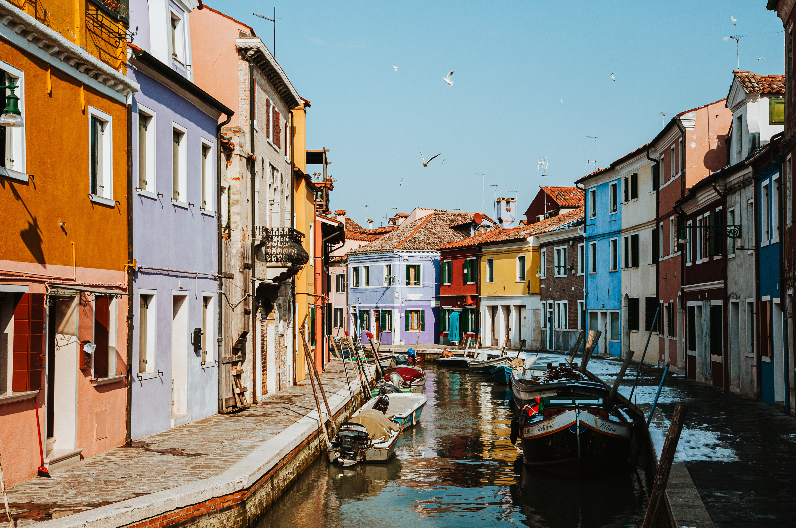
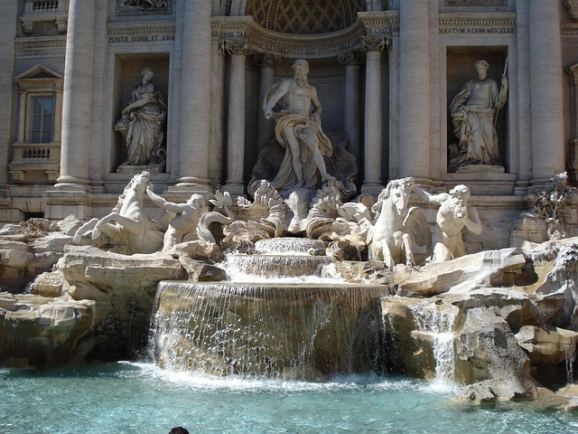
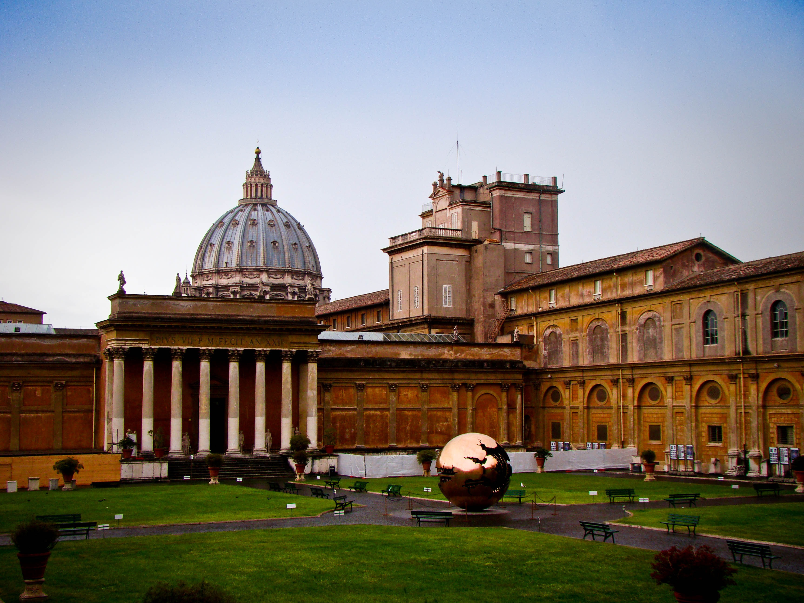

Italia no solo se visita, se vive. En cada ciudad hay música en las plazas, artistas pintando en la calle y mercados llenos de vida. Caminar por sus barrios es encontrarse con tradiciones, festivales y pequeños detalles que cuentan historias. Lo mejor es perderse un poco, mirar alrededor y dejar que la cultura italiana sorprenda a cada paso.



